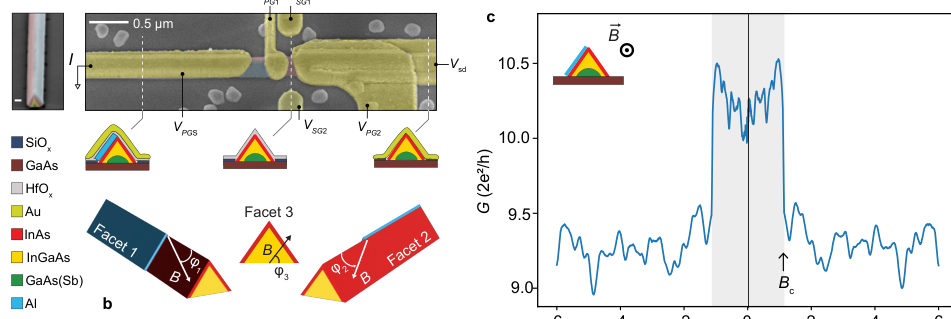
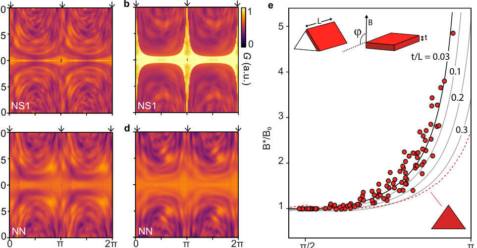
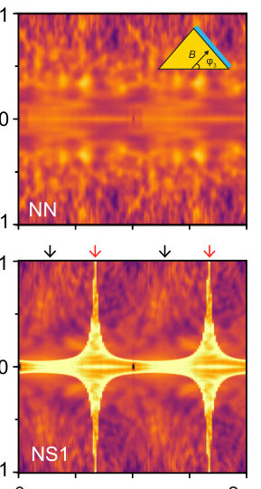

Authors: Christian E. N. Petersen, Damon J. Carrad, Daria Beznasyuk, Thomas S. Jespersen
Type: experiment · Category: other · PDF: https://arxiv.org/pdf/2606.23053v1
Analysis basis: full PDF text, analyzed in chunks
Topic relevance: non-equilibrium dynamics 1/5



Summary. The researchers used conductance fluctuation tomography on InAs nanowires to map the spatial paths of charge carriers. By analyzing how electrical conductance fluctuates with applied magnetic fields and field angles, they successfully distinguished between bulk conduction and transport confined to near-surface accumulation layers. This technique proves that universal conductance fluctuations serve as a sensitive probe for phase-coherent electronic pathways in nanoscale devices.
Why it may be interesting. This work provides a powerful experimental demonstration of using quantum interference phenomena (UCF) as a non-invasive tomographic tool to map out complex electronic pathways in solid-state nanostructures, relevant for understanding mesoscopic physics.
Main problem. The study aims to determine the spatial distribution of charge carriers within nanoscale semiconductor nanowires by probing phase-coherent transport pathways.
Main result. Conductance fluctuation tomography successfully distinguishes between bulk, near-surface, and facet-confined transport regimes, indicating that transport is dominated by a near-surface accumulation layer in InAs nanowires.
Method. The researchers employed conductance fluctuation tomography using universal conductance fluctuations (UCF) measured as the magnetic field strength and orientation were varied across planar selective-area-grown nanowires.
Model / system. The physical system is a planar array of selectively-area-grown InAs nanowires, tested in both normal-normal (NN) and normal-superconductor (NS) geometries. The analysis compares experimental data against theoretical models describing transport through bulk vs. near-surface facets.
Key observables. Two-terminal conductance $G$ as a function of magnetic field ($|B|$) and orientation ($\phi$), the magnitude of universal conductance fluctuations ($\sim e^2/h$), and extracted series resistance ($R_s$).
Important parameters / regimes. Low temperatures ($T \sim 20\ ext{mK}$), superconducting gap features, and geometric parameters derived from field dependence.
Assumptions / limitations. The analysis assumes that conductance fluctuations are governed by interference loops enclosing magnetic flux, allowing for geometry inference; it also models transport based on distinct physical scenarios (bulk vs. surface).
Figures summary. Figures show SEM images and device schematics, angle-resolved conductance maps ($G$ vs. $B$ and $\phi$), extracted patterns of fluctuation extrema ($B^*(\phi)$), and Monte Carlo simulations comparing experimental data to projected area models for different transport geometries.
Paper structure. The paper proceeds by establishing the physical setup (SAG nanowires, NN/NS devices) and measurement techniques (UCF tomography). It then analyzes the angular dependence of conductance fluctuations, fitting these patterns to theoretical models that distinguish between bulk, near-surface, and facet-confined transport pathways.
Understanding the spatial distribution of carriers is important for interpreting transport in nanoscale devices. Here, we apply conductance fluctuation tomography to planar selective-area-grown InAs nanowires in both normal-normal and normal-superconductor device geometries. By tracking the evolution of conductance-interference features as a function of magnetic-field strength and orientation, we extract information about the geometry of phase-coherent transport pathways. Using theory to distinguish between bulk-dominated transport, coherent near-surface transport across facets, and transport confined to individual facets. The measurements are consistent with transport dominated by a near-surface accumulation layer in InAs. Devices with normal contacts show behavior consistent with coherent transport across the nanowire apex, whereas hybrid normal-superconductor devices exhibit signatures of more facet-dependent transport. These results demonstrate how universal conductance fluctuations can be used as a tomographic probe of phase-coherent transport pathways in semiconductor nanostructures.